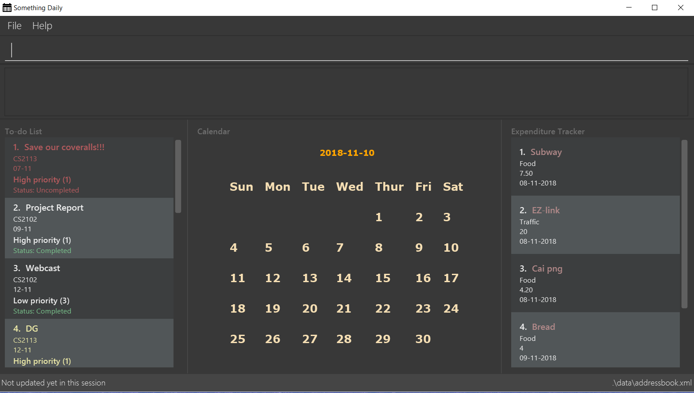

By: Team T09-2 Since: Sep 2018 Licence: MIT
- 1. Introduction
- 2. Quick Start
- 3. Features
- 3.1. Viewing help :
help - 3.2. Adding a task:
TDL_add - 3.3. Editing a task :
TDL_edit - 3.4. Deleting a task :
TDL_delete - 3.5. Marking a task as completed:
TDL_complete - 3.6. Marking a task as uncompleted:
TDL_uncomplete - 3.7. Viewing tasks :
TDL_view - 3.8. Sorting tasks :
TDL_sort - 3.9. Deadline GUI notification
- 3.10. Adding an expenditure :
ET_add - 3.11. Editing an expenditure :
ET_edit - 3.12. Deleting an expenditure :
ET_delete - 3.13. Viewing expenditures :
ET_view - 3.14. Checking expenditures :
ET_check - 3.15. Getting advice for spending money :
ET_advice - 3.16. Calendar GUI
- 3.17. Viewing daily summary :
check - 3.18. Listing entered commands :
history - 3.19. Undoing previous command :
undo[Coming in v2.0] - 3.20. Redoing the previously undone command :
redo[Coming in v2.0] - 3.21. Exiting the program :
exit - 3.22. Saving the data
- 3.1. Viewing help :
- 4. FAQ
- 5. Command Summary
1. Introduction
Something Daily (SD) is for those who prefer to use a desktop app to manage a significant number of academic tasks and keep track on expenditures. More importantly, SD is optimized for those who prefer to work with a Command Line Interface while still having the benefits of a Graphical User Interface (GUI). If you can type fast, SD can get your tasks management and expenditure tracking done faster than traditional GUI apps. Interested? Jump to the Section 2, “Quick Start” to get started. Enjoy!
2. Quick Start
-
Ensure you have Java version
9or later installed in your Computer. -
Download the latest
somethingdaily.jarhere. -
Copy the file to the folder you want to use as the home folder for your application.
-
Double-click the file to start the app. The GUI should appear in a few seconds.
 -
Type the command in the command box and press Enter to execute it.
e.g. typinghelpand pressing Enter will open the help window. -
Some example commands you can try:
-
TDL_addt/Tutorial 5 m/CS2101 d/12-09 p/1: adds a task namedTutorial 5to the To-do List. -
TDL_delete3: deletes the 3rd task in the To-do List -
exit: exits the app
-
-
Refer to Section 3, “Features” for details of each command.
3. Features
Command Format
-
Our product will be divided to two sub-parts which are called
To-do ListandExpenditure Tracker. For each part, do remember to add the domain commandTDL(which represents To-do List) orET(which represents Expenditure Tracker). E.g. inET check status,ETis the domain command that leads you to Expenditure Tracker. -
Words in
UPPER_CASEare the parameters to be supplied by the user e.g. inTDL_add t/TASK,TASKis a parameter which can be used asadd t/Homework. -
Items in square brackets are optional e.g.
t/TASK [d/DATE]can be used ast/Homework d/12-09or ast/Homework. -
Parameters can be in any order e.g. if the command specifies
t/TASK m/MODULE,m/MODULE t/TASKis also acceptable.
3.1. Viewing help : help
Shows a list of commands
Format: help
3.2. Adding a task: TDL_add
Adds a task to the to-do list
Format: TDL_add t/TASK m/MODULE d/DATE p/PRIORITY
Examples:
-
TDL_add t/Tutorial 5 m/CS2101 d/12-09 p/1
3.3. Editing a task : TDL_edit
Edits an existing task in the to-do list.
Format: TDL_edit INDEX [t/TASK] [m/MODULE] [d/DATE] [p/PRIORITY]
Examples:
-
TDL_edit 1 t/Tutorial 2 m/CS2113
Edits the task name and module code of the 1st task to beTutorial 2andCS2113respectively. -
TDL_edit 2 t/Tutorial 2 d/ p/
[Coming in v2.0] Edits the task name of the 2nd task to beTutorial 2and clears all existing deadlines and priority tags associated with this task.
3.4. Deleting a task : TDL_delete
Deletes the specified task from the to-do list.
Format: TDL_delete INDEX
Examples:
-
TDL_delete 2
Deletes the 2nd task in the to-do list. -
TDL_delete 1
Deletes the 1st task in the to-do list.
3.5. Marking a task as completed: TDL_complete
Marks the specified task in the to-do list as completed.
Format: TDL_complete INDEX
Examples:
-
TDL_complete 3
The 3rd task in the to-do list is now marked as completed.
3.6. Marking a task as uncompleted: TDL_uncomplete
Marks the specific task in the to-do list as uncompleted.
Format: TDL_uncomplete INDEX
Examples:
-
TDL_uncomplete 3
The 3rd task in the to-do list is now marked as uncompleted.
3.7. Viewing tasks : TDL_view
Shows a filtered list of tasks in the to-do list.
Format: TDL_view PARAMETER
Examples:
-
TDL_view completed
The list is now populated with tasks marked as completed. -
TDL_view all
The list is now populated with all tasks regardless of their completion status.
3.8. Sorting tasks : TDL_sort
Sorts and displays the to-do list by a certain task parameter.
Format: TDL_sort PARAMETER
Examples:
-
TDL_sort date
The tasks are now sorted by its due date. -
TDL_view uncompletedand then followed byTDL_sort priority
All uncompleted tasks will be sorted by their priority level.
3.9. Deadline GUI notification
Notify when the uncompleted tasks is due within the following seven days from the current time or when the deadline of uncompleted tasks have passed.
No command inputs are required.
Example:
As shown above (current date: 9th Nov 2018)
No command related examples are available.
3.10. Adding an expenditure : ET_add
Adds an expenditure to Expenditure Tracker
Format: ET_add e/DESCRIPTION d/DATE m/MONEY c/CATEGORY
Examples:
-
ET_add e/Chicken rice d/12-09-2018 m/4.2 c/Food
3.11. Editing an expenditure : ET_edit
Edits an existing expenditure in the Expenditure Tracker.
Format: ET_edit INDEX [e/DESCRIPTION] [d/DATE] [m/MONEY] [c/CATEGORY]
Examples:
-
ET_edit 1 e/Beef rice m/12.5
Edits the expenditure description and money detail of the 1st expenditure in the Expenditure Tracker list to beBeef riceand12.5respectively. -
ET_edit 2 d/09-12-2018 c/Electronics
Edits the expenditure date and category of the 2nd expenditure to be09-12-2018andElectronicsrespectively.
3.12. Deleting an expenditure : ET_delete
Deletes the specified expenditure from the Expenditure Tracker.
Format: ET_delete INDEX
Examples:
-
ET_delete 2
Deletes the 2nd expenditure in the Expenditure Tracker. -
ET_delete 1
Deletes the 1st expenditure in the Expenditure Tracker.
3.13. Viewing expenditures : ET_view
Shows a filtered list of expenditures in the expenditure tracker.
Format: ET_view PARAMETER
Examples:
-
ET_view 01-01-2018
The list is now populated with expenditures of date01-01-2018. -
ET_view Electronics
The list is now populated with expenditures ofElectronicscategory. -
ET_view all
The list is now populated with all expenditures regardless of their date or category.
3.14. Checking expenditures : ET_check
Checks the status of the expenditures in a particular period and generates a pie-chart to demonstrate how much money was spent on each unit period.
Format: ET_check start/STARTDATE end/ENDDATE
Examples:
-
ET_check start/01-01-2017 end/01-01-2018
Checks the status of the expenditures from 01-01-2017 to 01-01-2018 and generates a pie-chart to illustrate how much money was spent on each expenditure.
3.15. Getting advice for spending money : ET_advice
Gives a short summary of the expenditures made so far and provides advice on how to spend a particular amount of money in a given period of time.
Format: ET_advice m/MONEY numofdays/NUMBEROFDAYS
Examples:
-
ET_advice m/1000 numofdays/25
Gives a short summary of the expenditures made so far and provides advice on how to spend 1000 SGD in the following 25 days. -
ET_advice m/240 numofdays/14
Gives a short summary of the expenditures made so far and provides advice on how to spend 240 SGD in the following 14 days.
3.16. Calendar GUI
A GUI related feature, the calendar will automatically show the full calendar for this current month and the current date.
Example:

As shown above (screenshot from GUI)
No click-event related examples available now.
3.17. Viewing daily summary : check
View a summary of all due tasks and all expenses on a particular day.
Format: check d/DATE
Examples:
-
check d/10-11-2018
A summary of all due tasks and all expenses on10-11-2018is shown.
3.18. Listing entered commands : history
Lists all the commands that you have entered in reverse chronological order.
Format: history
|
Pressing the ↑ and ↓ arrows will display the previous and next input respectively in the command box. |
3.19. Undoing previous command : undo [Coming in v2.0]
Restores the application to the state before the previous undoable command was executed.
Format: undo
|
Undoable commands: those commands that modify the application’s content ( |
Examples:
-
TDL_complete 3
TDL_view completed
undo(reverses theTDL_complete 3command)
3.20. Redoing the previously undone command : redo [Coming in v2.0]
Reverses the most recent undo command.
Format: redo
Examples:
-
TDL_complete 3
undo(reverses theTDL_complete 3command)
redo(reapplies theTDL_complete 3command)
3.21. Exiting the program : exit
Exits the program
Format: exit
3.22. Saving the data
All to-do list data are saved in the hard disk automatically after any command that changes the data.
There is no need to save manually.
4. FAQ
Q: How do I transfer my data to another computer?
A: Install the app in the other computer and overwrite the empty data files it creates with the files that contains the data in your previous data folder.
Q: How can I run this product in Linux terminal/Dos terminal?
A: After installing/updating the java package, you can run java -jar somethingdaily.jar in terminal.
Q: Can I import my to-do list related or expenditure tracker related data into your application?
A: At current release, you cannot import any related data from other sources. However, our team is considering to add a feature in future release to help users in importing data from other sources by CSV files.
Q: When I run this application, it shows java.lang.NoClassDefFoundError: javafx/application/Application error.
A: You are missing JavaFX, you can run our application after installing it with sudo apt install openjfx.
Q: How can I read the User Guide in the interface of your product?
A: You can simply use the help command to read this User Guide.
Q: How can I update the application if you release a new version?
A: Unfortunately, we do not support incremental updates right now, so users can only obtain the latest release from our GitHub directly. We are considering to use API from Google to implement over-the-air updating in future release.
5. Command Summary
General:
-
Help :
help -
Check :
check d/DATE -
History :
history -
Undo :
undo[Coming in v2.0] -
Redo :
redo[Coming in v2.0] -
Exit :
exit
To-do List:
-
Add :
TDL_add t/TASK m/MODULE d/DATE p/PRIORITY -
Edit :
TDL_edit INDEX [t/TASK] [m/MODULE] [d/DATE] [p/PRIORITY] -
Delete :
TDL_delete INDEX -
Complete :
TDL_complete INDEX -
Uncomplete :
TDL_uncomplete INDEX -
View :
TDL_view PARAMETER -
Sort :
TDL_sort PARAMETER
Expenditure Tracker:
-
Add :
ET_add e/DESCRIPTION d/DATE m/MONEY c/CATEGORY -
Edit :
ET_edit INDEX [e/DESCRIPTION] [d/DATE] [m/MONEY] [c/CATEGORY] -
Delete :
ET_delete INDEX -
View :
ET_view PARAMETER -
Check :
ET_check start/STARTDATE end/ENDDATE -
Advice :
ET_advice m/MONEY numofdays/NUMBEROFDAYS